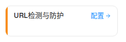

2.1 策略流水线入口卡片 UrlProtection Policy Card
| 交互层级 | 层级0：页面默认态中的策略入口卡片 |
|---|---|
| 触发路径 | 打开 /filter-rules/pipeline，在阶段3内容层定位"URL检测与防护"卡片。 |
| 点击行为 | 卡片整体与"配置 →"按钮均执行 setContentDrawerPolicy("url"); setContentDrawerOpen(true)，打开内容策略抽屉并选中 URL检测与防护。 |
| 卡片数据 | priority 3001 · stage 3 · type configurable · todayHits 45 / todayBlocked 35 / todayExempted 10 · action "隔离并记录日志"（极简卡不渲染这些数字，仅存于数据模型/Tooltip） |
0交互层级 0：策略卡默认态
URL检测与防护
配置 →
点击卡片跳转本文档 2.2 抽屉规格（demo 中打开 80vw 抽屉）；title 属性模拟 hover Tooltip 文案。

| 元素 | 实际文案/属性 | 交互行为 | i18n key |
|---|---|---|---|
| 卡片标题 | URL检测与防护 | 点击卡片打开内容策略抽屉 | pipeline.urlProtection（zh/en/th） |
| 配置入口 | 配置 + ArrowRight(12px) | stopPropagation 后同样打开抽屉 | pipeline.configBtn |
| 左侧色条 | 橙 #fa8c16，宽 4px | 无独立交互 | -（由 type=configurable 推导） |
| Hover Tooltip | 右侧弹出：策略：URL检测与防护 / 动作：隔离、投递 / 效果：命中则隔离，邮件保留至隔离区 / 底部隔离区跳转说明 | delayDuration 300ms | pipeline.policyTooltip*、pipeline.actionQuarantineAction、pipeline.actionDeliver、pipeline.policyEffectQuarantine、pipeline.quarantineModuleLink |
DOM 树比对结果
| 比对项 | demo 实际 DOM | 提取/预览 HTML | 是否一致 |
|---|---|---|---|
| 根节点 | div.w-[220px].rounded-lg.cursor-pointer.h-[60px]，rect 220×60 | .preview-card 220×60 | 一致 |
| 子结构 | 色条 div.w-1 + 内容 div（标题 span + 配置 button） | 同结构（.preview-bar + .preview-card-body） | 一致 |
| 关键文案 | URL检测与防护 / 配置 | URL检测与防护 / 配置 → | 一致 |
| 触发结果 | 打开阶段3内容策略抽屉（80vw Sheet） | 规格描述同一路径 | 一致 |